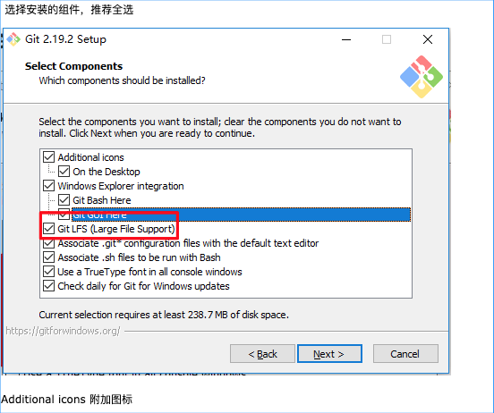
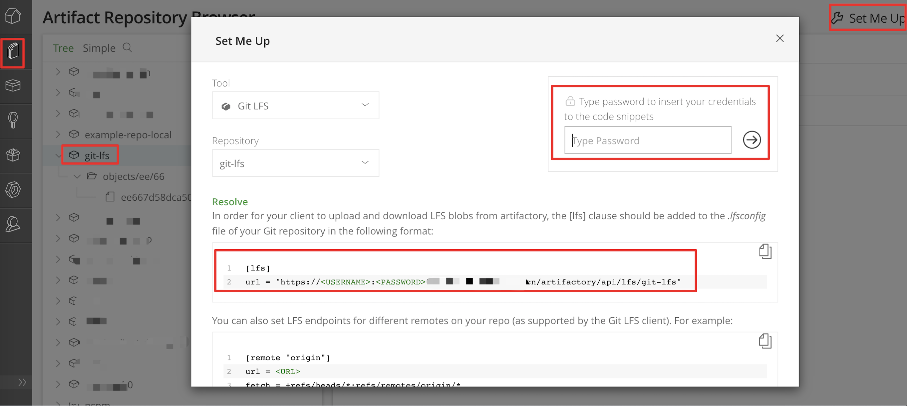
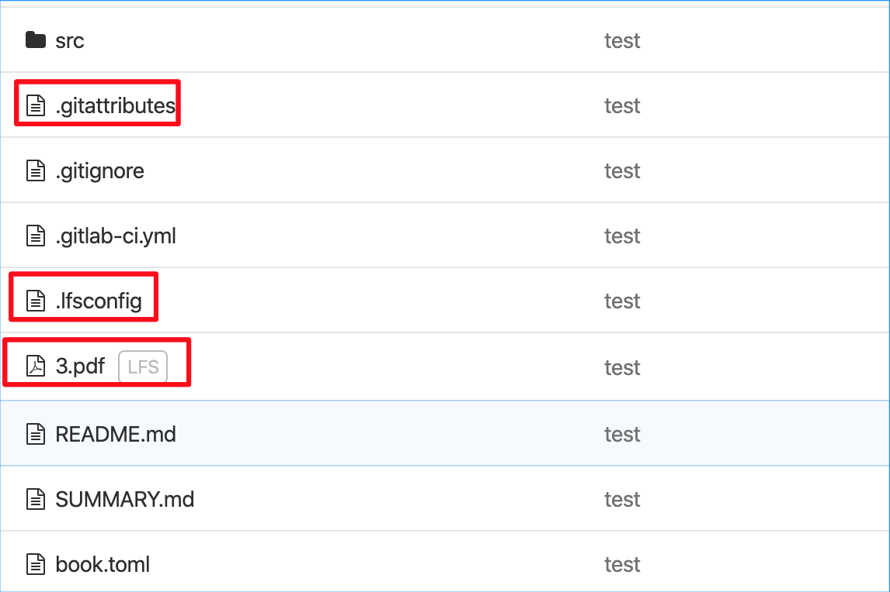

由于项目代码中存放了一些大文件在 git 仓库中（比如训练后的模型数据），所以最近收到公司的通知，需要给 git 进行瘦身。
本文内容是摘自公司的通知。
提前告知
瘦身将从此库中永久删除此文件，且无法恢复。包括所有“分支”中的引用，所有“Tag”中的引用，连同提交此文件的log记录也一并清除。
请在操作之前将要永久删除的文件备份，并记录目录位置。待瘦身结束后，将此大文件以「LFS」的形式 commit 到此库中。 详见《GitLab lfs 使用》。
基本原理
先在本地对 git 库瘦身，再镜像推送到 GitLab 新创建的库。
待新库测试稳定后，通知管理员将旧的 git 库归档，组内使用新库，新/旧库 rename 互换。
操作步骤：（大库瘦身需要几个小时，请提前注销组员权限）
1. 需要瘦身的库 git clone –bare 到本地
1 | git clone --bare https://git.server.com/group/name.git |
2. 查看 git 库空间大小
1 | du -sh ./name.git |
3. 查看历史上哪些文件庞大（检查所有分支）
1 | cd name.git |
查询结果对应关系：<SHA-1> <类型> <size> <size-in-packfile> <offset-in-packfile>
如：
1 | 950dae43f100f6586884893eab3b258a09da1076 blob 173244608 172458659 28056 |
4. 查看大文件名称，排名前 10，从小到大，检索 5G 库需要 1 分钟
1 | git rev-list --objects --all | grep "$(git verify-pack -v ./objects/pack/*.idx | sort -k 3 -n | tail -10 | awk '{print$1}')" |
5. 删除历史文件，删除5G库需要15分钟（此步永久删除，对所有分支 /tag/log 的删除操作）
1 | git filter-branch --force --index-filter 'git rm -rf --cached --ignore-unmatch folder/file1 folder/file2 folder/file3' --prune-empty --tag-name-filter cat -- --all |
filter-branch 是让 git 重写每一个分支
--force假如遇到冲突也让 git 强制执行。--index-filter重写索引的过滤器。--prune-empty如果修改后的提交为空则扔掉不要。--tag-name-filter表示对每一个 tag 如何重命名，重命名的命令紧跟在后面，当前的 tag
名会从标注输入送给后面的命令，用 cat 就表示保持 tag 名不变。
紧跟着的--表示分割符，最后的--all表示对所有的分支和 tag 都考虑在内。
6. 删除GIT缓存记录里的内容
1 | rm -rf ./refs/original/ |
7. 对 git log 处理，任何时间运行 git reflog 命令可以查看当前的状态
1 | git reflog expire --expire=now --all |
8. 在进行 repack 前需要将所有对这些 commits 的引用去除
1 | git repack -A -d |
9. 执行 gc 压缩
1 | git gc --aggressive --prune=now |
--aggressive 最大限度的压缩，会比较缓慢
10. 检查完整性
1 | git fsck --full --unreachable |
11. 再次查看 .git 空间大小
1 | du -sh ../name.git |
联系 gitlab 管理员
- 联系管理员创建新的 git 库
- 将瘦身后的 git 库镜像推送到 gitlab
git push --mirror https://git.server.com/group/name_new.git
- 测试使用新的库
- 将旧库 rename 并归档，新库 rename 成旧库名字
- 将大文件以 LFS 形式
commit到新库中 - 恢复新库的人员权限，通知大家使用
GitLab LFS 使用方法
Linux 安装
git lfs 要求 git >= 1.8.2
1 | yum install git-lfs -y |
MacOS 安装
运行 brew install git-lfs 即可
Windows 安装
git 版本大于 2.12
关闭 Windows 的 ssl 校验
1 | git config --global http.sslVerify false |

申请 git lfs 仓库
走流程申请一个 aritfactory –git lfs 仓库
使用方法
告诉 lfs 需要管理的大文件
比如 3.pdf，运行命令 git lfs track 3.pdf，会产生 git lfs 管理文件 .gitattributes
支持通配符比如 git lfs track *.exe
添加 .lfsconfig 文件，指定 git lfs 文件存放位置
我申请的 git lfs 仓库叫做 git-lfs
登陆 aritfactory 后，如下操作：

- 同时提交
.gitattributes、.lfsconfig、3.pdf，然后在 gitlab 中查看
